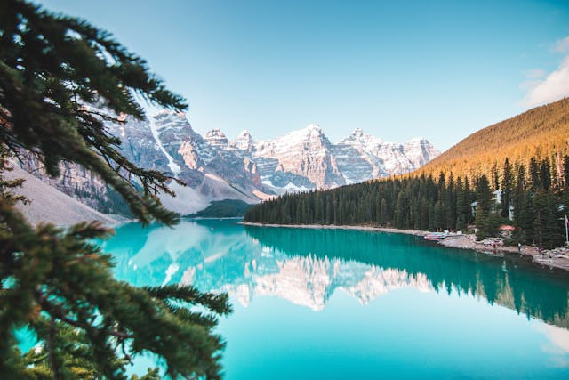
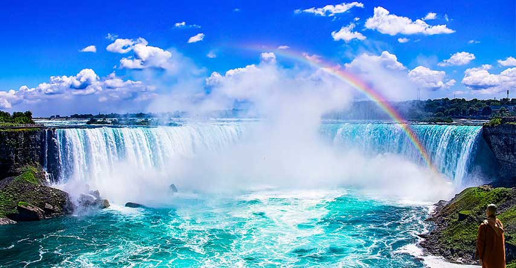

Descubra o Canadá
Um país de paisagens grandiosas, cidades vibrantes e uma mistura cultural única. Aqui você encontra um panorama rápido dos temas principais.
Paisagens
Montanhas imponentes, lagos turquesa e florestas extensas — o Canadá é sinônimo de natureza intocada e trilhas memoráveis.
Cultura
Uma mistura de tradições indígenas, influência britânica e francesa e uma cena artística contemporânea muito ativa.

Culinária
Do famoso maple syrup aos pratos regionais como poutine e frutos do mar frescos — sabores que refletem a diversidade local.

Pontos Turísticos
De Niágara às Montanhas Rochosas, há atrações para todos os gostos: cidades históricas, mirantes e parques nacionais.
Economia
Setores como recursos naturais, tecnologia e serviços compõem uma economia estável e diversificada.